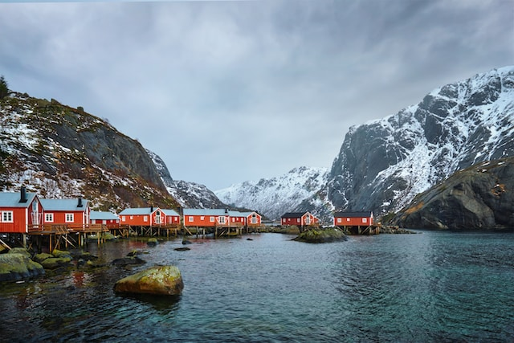
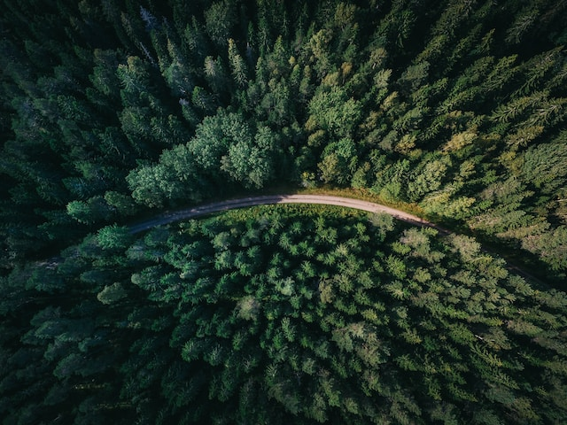
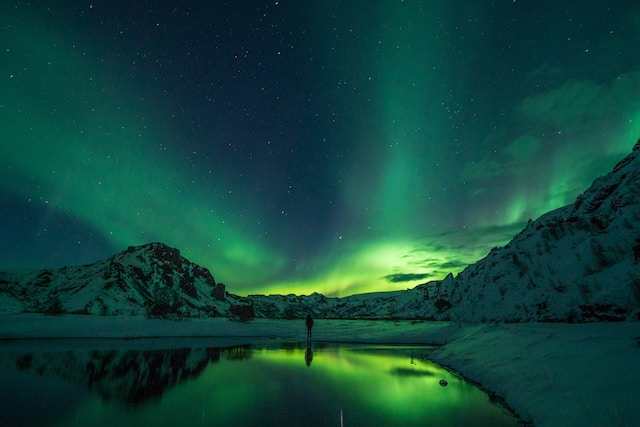

Explore the world with a different perspective. We invite you to
embark on a journey like no other. Our unique approach to travel
combines the beauty of diverse destinations with a mindful and
sustainable mindset.
We believe in the transformative power of travel when it's done with
care, intention, and respect for both the planet and its people.
Join us in creating unforgettable memories while making a positive
impact on the places we visit.
Rugged terrain and dramatic landscapes
make this a prime destination for mountain climbing enthusiasts. With
towering peaks, pristine alpine lakes, and breathtaking vistas, this
Scandinavian gem offers a thrilling adventure that challenges both
body and spirit.
• Epic Ascents: Norway boasts numerous mountain ranges that cater to
climbers of all skill levels.
• Local Expertise: Experienced local guides lead your expedition,
ensuring your safety and offering insights into the region's
geological wonders, wildlife, and cultural significance
• Wildlife Encounters: Keep your eyes peeled for native wildlife,
from reindeer and arctic foxes to various bird species found in
these inhospitable altitudes
Price: $15,000 (Includes lodging, food and all equipment and
clothing required for the specific activities)

LOFOTEN ISLANDS
A pristine archipelago located in
the northern reaches of Norway, is a hidden gem that beckons travelers
seeking a sustainable and mindful tourism experience. Nestled amidst
breathtaking natural beauty, Lofoten offers a unique blend of
eco-friendly adventures and opportunities for mindful exploration with
interesting people.
• Mindful Hiking: Lace up your hiking boots and embark on mindful
hikes along the rugged trails of Lofoten
• Sustainable Fishing: Lofoten has a rich fishing heritage, and you
can participate in sustainable fishing tours with local guides.
• Cultural Immersion: Engage with the local culture and learn about
their sustainable traditions.
Price: $10,000 (Includes lodging, food and all equipment and
clothing required for the specific activities)

UPPER PASVIK
A place where the world's worries fade into the whispers of the wind,
and the brilliant night sky above unveils its celestial secrets. This
dream becomes a reality when you venture into one of Norway's
magnificent national parks, where camping under the stars in a massive
forest is an experience like no other.
• Responsible Camping: Remember to follow Leave No Trace principles,
leaving the forest as pristine as you found it.
• Campfire Conversations: Build a campfire and gather around its
warm glow with your fellow adventurers.
• Starry Nights: As the sun dips below the horizon and the darkness
of night takes over, the forest transforms into a realm of mystery
and magic.
Price: $6,000 (Includes lodging, food and all equipment and clothing
required for the specific activities)

TROMSØ
Dark will reveal an enchanting natural spectacle. The Northern Lights,
or Aurora Borealis, illuminate the Arctic sky with their dazzling
display of colors. Norway offers some of the best opportunities to
witness this cosmic phenomenon.
• Chasing the Lights: Plan a trip to remote, light-pollution-free
locations such as Tromsø or the Lofoten Islands to maximize your
chances of witnessing the Aurora Borealis.
• Nighttime Magic: As darkness descends, the Northern Lights come
alive. The sky transforms into a canvas painted with vibrant hues of
green, pink, and purple, creating a surreal and mesmerizing
spectacle.
• Capture the Northern Lights with your camera or smartphone to
immortalize this celestial phenomenon. Professional photographers
are available to help you capture the perfect shot.
Price: $4,000 (Includes lodging, food and all equipment and clothing
required for the specific activities)